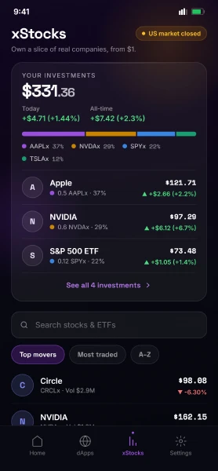
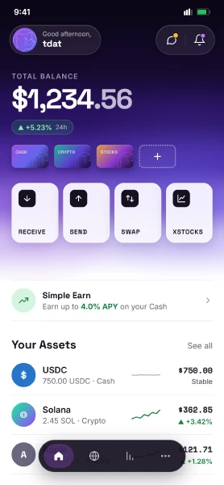
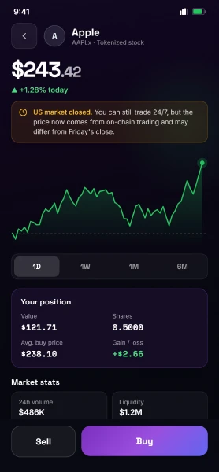

Start with Google.
Embedded-wallet onboarding aims to make the first step familiar, without asking newcomers to manage a seed phrase in the interface.
CASE STUDY 01 / UNIHACKFEST 2026
N.E.D Wallet brings familiar money interactions to Solana: Google sign-in, USDC transfers, and an approachable way to explore tokenized stocks.


PRODUCT DESIGN / SAMPLE BALANCES
01 / THE PRODUCT QUESTION
A wallet can speak the language of everyday money, even when the infrastructure underneath is on-chain.
N.E.D explores a Web2.5 experience for people who are unfamiliar with crypto. The direction is USDC-first: reduce jargon, make the next action clear, and explain what a transaction means before asking someone to confirm it.
I joined UniHackfest 2026 as project owner. This case study documents the team's product direction, design and repository state. Individual implementation contributions are not attributed beyond that confirmed role.
Development snapshot: 28 September 2026 · Repository commit 68e5cc7. Product capabilities may evolve.
Embedded-wallet onboarding aims to make the first step familiar, without asking newcomers to manage a seed phrase in the interface.
Cash, tokens and investments get distinct labels. Simple and Crypto are views of the same wallet, not separate accounts.
Fees, estimated output and transaction context belong before confirmation. The user stays in control.
02 / TRY THE EXPERIENCE
Explore a portfolio, review a purchase, then sell part of a holding. This small walkthrough is inspired by N.E.D's xStocks design.
Portfolio simulation only. Fixed sample prices and balances. No wallet connection, live quotes or transactions. Refreshing resets the session.
Start with an asset. I’ll walk you through it.
Mây guides this portfolio. Teddy, the purple bear, belongs to N.E.D Wallet.
03 / A DISTINCT PRODUCT IDENTITY
N.E.D's purple identity lives inside the project. The portfolio keeps its own lime palette and Mây companion.

Selected screens from the supplied NED Wallet Design System. Figures, balances and market values are design examples, not user results.
04 / WHAT EXISTS TODAY
Repository evidence, not a claim of production readiness or a security audit.
The embedded portfolio walkthrough above uses fixed fixtures, not those live APIs.
These should not be presented as fully available product features.
The supplied PDF includes fee-free wording. The newer project notes say gas sponsorship is not available. Devnet transfers require SOL; example APYs and demo returns are not promises.
05 / UNDER THE INTERFACE
Reanimated, i18next and React Native SVG support the interface. GeckoTerminal supplies chart data and SNS resolves .sol names. The current product is an Expo application; it is separate from the portfolio's proposed Next.js migration.
06 / WHAT COMES NEXT
The next milestone is confidence in the core experience: clear transaction states, consistent sample/live-data labels, and validation on real devices. This case study will grow with the product.
Talk about the project ↗